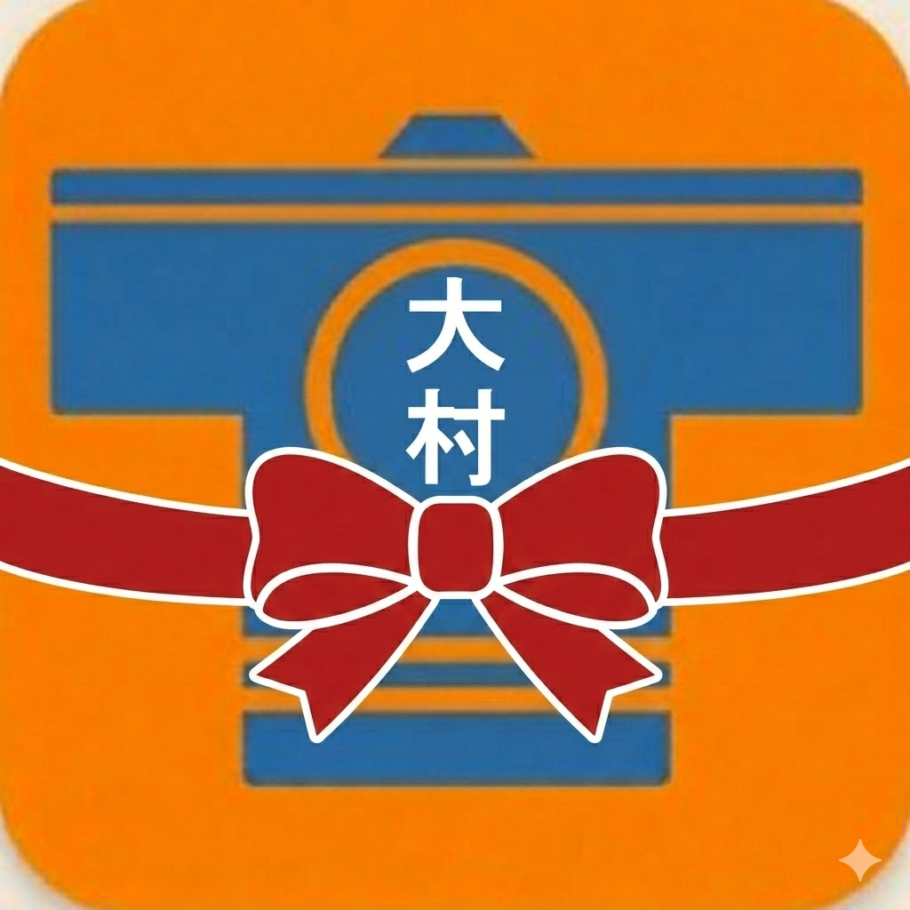

多言語指差し防災アプリ - ご利用ガイド
大村市消防団員の皆様へ
本アプリ（Link大村市消防団）は, 被災直後の極限状態の中で言葉の壁がある外国人被災者と, 現場の消防団員が「YES」か「NO」かの極めてシンプルなQ＆Aで被災者の身体状態を把握しいち早く命をつなぐ行動を取るための対面多言語対話防災アプリです。 ベトナム語、インドネシア語、英語、中国語など, 大村市に多く住む24ヶ国の多言語に対応しています。 完全オフライン（ネット通信不要）で動作するため、通信環境が遮断された被災現場でも確実に使用できます。公式LINEページ「長崎県大村市消防団DX」のメニュー画面から簡単に開き、スマートフォンやPCですぐに利用できます。
本アプリは、スマートフォンのホーム画面にアイコンを追加することで、いつでも通常のアプリのように1タップで起動できるようになります。
公式LINEからリンクをタップしてアプリを開き、必ず標準ブラウザの「Safari」で開いてください。（LINE内ブラウザではホーム追加ができません）
画面下部にある「共有アイコン（四角から矢印が飛び出ているマーク）」をタップします。
メニュー内の「ホーム画面に追加」をタップすると、スマホの画面に大村市消防団のアイコンが追加され導入完了です。
公式LINE等からリンクを開き、標準ブラウザである「Google Chrome」でアプリを表示させます。
画面右上（または右下）にある「その他メニュー（点3つのマーク）」をタップします。
「アプリをインストール」または「ホーム画面に追加」をタップすると、自動的にスマホ画面にアイコンが作成されます。
アプリを起動すると、言語選択画面（国旗一覧）が表示されます。相手の国籍、または理解できる言語を選択してもらいます。
本アプリは、1台のスマートフォンを団員と被災者の二者で挟み込むように向かい合って使います。
団員が下半分の質問カードをタップすると、上半分の質問内容が瞬時にその言語に翻訳され、自動音声で読み上げられます。
被災者がボタンを押すと、団員エリアの「相手の回答」欄に日本語でリアルタイムに回答内容が表示されます。
⚠️ 確実な音声読み上げ機能（SpeechSynthesis）の利用のために
本アプリの音声読み上げ機能は、スマートフォンのOS内蔵の音声エンジン（SpeechSynthesis）を利用します。 端末の設定や言語パックのダウンロード状況によっては、一部の言語で音声が読み上げられない場合があります。 より確実な多言語発話を行うため、あらかじめ端末の「設定」➔「アクセシビリティ」➔「読み上げコンテンツ」等から、多言語の音声データをインストールしておくことを推奨します。
🔒 個人情報およびデータ管理について
本アプリは完全ローカル（ブラウザのメモリ内）で動作し、送信された回答データや被災者の入力情報が外部のサーバーに送信されることは一切ありません。 「一覧（回答履歴）」に記録された情報は、アプリのクリアボタンを押すか、ブラウザをリロード・閉じることで完全に初期化されます。個人情報の外部流出リスクはなく、安全に使用していただけます。